De la nube fractal al disco protoplanetario
Cómo una nube molecular de mil masas solares —que ni siquiera es una esfera— se fragmenta, colapsa en caída libre, se frena al ionizarse y, obligada por la conservación del momento angular, termina fabricando el platillo donde nacerán los planetas.
La clase pasada dejó planteada la condición de colapso gravitacional de una nube molecular modelada como esfera. Esta clase la pone a prueba contra la realidad —donde no existen esferas homogéneas, sino fractales aleatorias— y sigue la historia completa: la fragmentación jerárquica de la nube, el truco termodinámico que le permite caer sin calentarse, el freno abrupto cuando se ioniza, las dos escalas de tiempo del nacimiento estelar, y el obstáculo final: el momento angular, que impide que la masa caiga directo sobre la estrella y obliga a la naturaleza a formar un disco de acreción. Ese disco —con sus clases 0 a III, su acreción magnetosférica, sus vientos y jets— es precisamente el escenario de la formación planetaria que ocupa el resto del módulo.
Repaso: el criterio de Jeans y el Saco de Carbón
Colapsa si la gravedad le gana a la agitación térmica.
Modelamos la nube molecular como una esfera homogénea autogravitante de masa M, radio R y temperatura T. La convención: la energía gravitacional vale cero cuando todas las partículas están infinitamente separadas. Con eso, la condición de colapso es que la energía gravitacional (en magnitud) supere a la energía termal —la suma de las energías cinéticas de las partículas del gas:
La prueba observacional
El modelo se contrasta con el Saco de Carbón, la nube oscura vecina a la Cruz del Sur. Con radiotelescopios se mide su temperatura (~20 K, a partir del máximo de intensidad de líneas moleculares convertido a temperatura equivalente), su masa (~10³ M☉, con trazadores moleculares ópticamente delgados, o por cuánto oscurece la Vía Láctea en el óptico) y su tamaño (del diámetro angular). Resultado: su densidad, ρ ~ 10⁻²² kg m⁻³ (nH₂ ~ 10⁵ m⁻³), calza con la densidad de Jeans para esos parámetros: el Saco de Carbón cumple el criterio y debería estar iniciando su colapso.
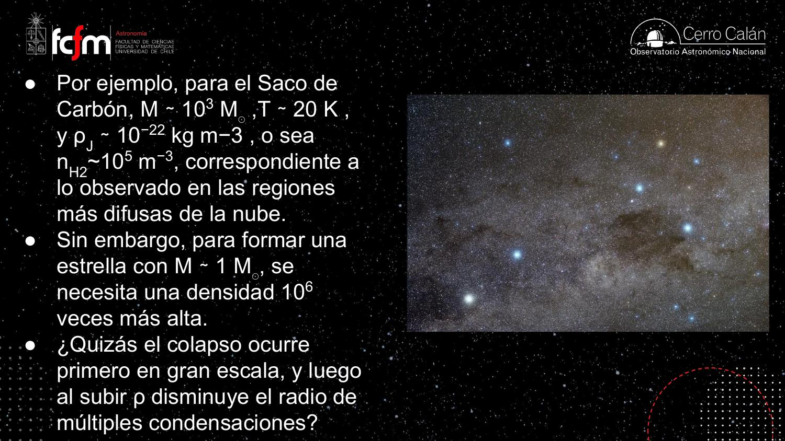
En astronomía «las cosas siempre son aproximadas a un orden de magnitud», dijo el profesor: la masa se estima con trazadores indirectos, el volumen a partir de un diámetro angular asumiendo esfericidad. Es el modo de trabajo del back-of-the-envelope: antes de simular nada, un análisis dimensional con potencias de 10 decide si la hipótesis (¿colapsa o no?) es plausible. La validación del modelo no es un ajuste fino, es un test de consistencia de órdenes de magnitud.
El medio interestelar real: fractales y fragmentación
La esfera homogénea no existe; el colapso la destruye al tiro.
¿Se parece la naturaleza a una esfera autogravitante? No. Las cartas del Aquila Rift y de la región de Ophiuchus —observadas por los satélites Planck (radio) y Herschel (infrarrojo, con mayor resolución angular; ambos fueron lanzados en el mismo cohete)— muestran nubosidad con estructura a toda escala, sin nada esférico a la vista.
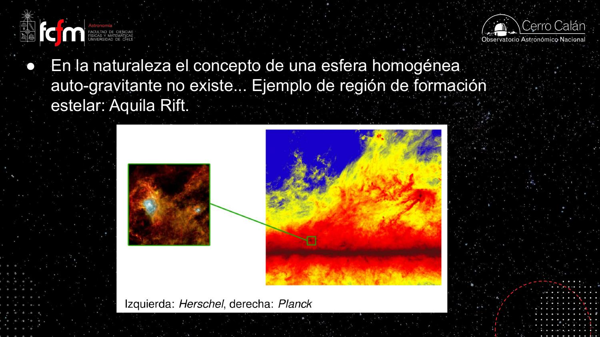
Una fractal aleatoria
El medio interestelar (ISM) es una fractal aleatoria: una estructura autosimilar, que se ve estadísticamente igual a gran y a pequeña escala, como un copo de nieve que se construye replicándose a sí mismo. La evidencia mostrada en clase: el mapa de hidrógeno atómico (línea de 21 cm) de la Nube Grande de Magallanes (Elmegreen et al. 2001, ApJ 548, 749). El mapa se presentó en cuatro versiones: la intensidad total (el área bajo la curva de la línea espectral en cada punto del cielo), el máximo de la línea, y la emisión separada en mitades azul y roja de la línea —que revelan el patrón de rotación de la galaxia vía efecto Doppler.
En cada dirección del cielo (una ascensión recta y una declinación) se registra un espectro: brillo en función de la longitud de onda alrededor de los 21 cm. Integrar bajo la curva da la intensidad total en ese punto; quedarse con el lado azul o el rojo separa el gas que se acerca del que se aleja. Un mapa por cada estadístico del espectro: es exactamente la idea de reducir una señal por píxel a features (integral, máximo, momentos).
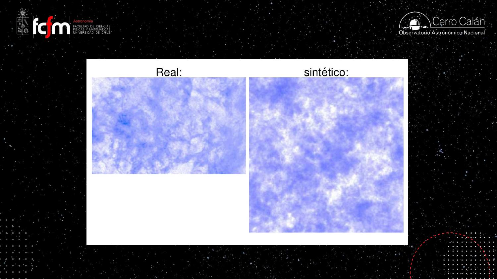
Fragmentación jerárquica
El argumento clave: cuando la nube empieza a caerse bajo su propio peso, su densidad sube. Pero como ρJ ∝ 1/M², una densidad más alta habilita el colapso de masas más chicas. Regiones internas de un décimo de la masa total ya cumplen su propio criterio de Jeans y colapsan por su cuenta; dentro de ellas, otras aún más chicas… La contracción gravitacional conduce a fragmentación: la esfera homogénea «se rompe al tiro» y la nube se despedaza en grumos cada vez menores. Así, una nube de ~1000 M☉ termina formando un cúmulo de estrellas, no una estrella gigante.
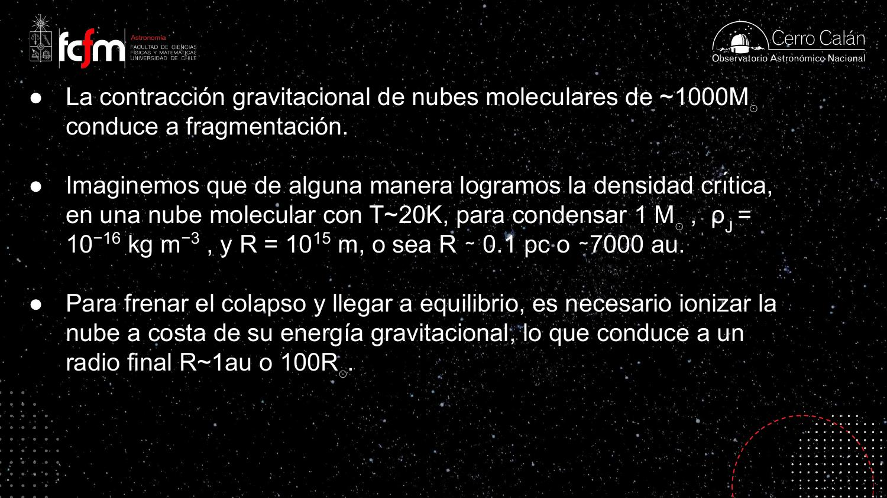
«No tenemos aún las herramientas matemáticas para trabajar de manera simple y analítica con estructuras de ese tipo. Quizás nos falta madurar, me refiero como humanidad.» El colapso de una fractal aleatoria no tiene solución cerrada; por eso el guión de esta clase alterna argumentos de orden de magnitud con simulaciones numéricas (sección 6).
La fragmentación jerárquica es una recursión: colapsa(nube) aumenta ρ, lo que dispara colapsa(sub-región) con masa menor, hasta un caso base que la corta (sección 4: la ionización). Y que una fractal sintética de «dos líneas de Python» sea indistinguible de la observación real es un test generativo clásico: si un modelo estadístico mínimo reproduce la textura de los datos, la estructura aparente no exige física adicional a esa estadística.
Caer sin calentarse: la nube transparente
El secreto termodinámico que permite la fragmentación indefinida.
Hay una pregunta incómoda: si la nube cae bajo su propio peso y pierde energía gravitacional, la conservación de energía exige que esa energía se convierta en algo — calor, por último. ¿Por qué entonces la temperatura se mantiene en ~20 K durante todo el colapso? (Y tiene que mantenerse: si T subiera, la densidad de Jeans ∝ T³ subiría y el colapso se frenaría.)
La respuesta: la nube es transparente a su propia radiación (ópticamente delgada). Está compuesta de átomos y moléculas —sistemas ligados— que solo interactúan con la radiación a través de transiciones discretas. El calor generado por la contracción calienta un poco los granitos de polvo interestelar (los mismos que hacen que el Saco de Carbón se vea oscuro contra las estrellas de fondo); esos granos, al estar apenas más calientes, brillan un poco más, y esa radiación escapa libremente de la nube. El enfriamiento es eficientísimo:
Átomos y moléculas (sistemas ligados) interactúan con la luz solo en líneas espectrales: son casi transparentes. Electrones y protones sueltos (plasma, como el interior del Sol) interactúan con los fotones continuamente: son opacos. Toda la historia del colapso pivota sobre esta diferencia: mientras la nube sea molecular, se enfría y cae; cuando se ionice, guardará su energía y se frenará.
Es un problema de disipación térmica: la nube molecular tiene un «radiador» perfecto (los granos de polvo radiando a un medio ópticamente delgado), así que su temperatura no sube por más potencia gravitacional que disipe — como un componente con un heatsink sobredimensionado. La ionización equivale a taparle el radiador: misma potencia entrante, disipación solo por la superficie, y la temperatura interna se dispara.
El freno del colapso: ionización y protoestrella
La energía gravitacional se gasta en romper moléculas — y ahí se acaba la caída libre.
¿Qué detiene la fragmentación? ¿Por qué no sigue hasta pedazos de masa planetaria o menores? Para frenar el colapso hay que subir la temperatura (recordar ρJ ∝ T³), y eso solo ocurre cuando la nube deja de poder enfriarse. La secuencia:
- El fragmento de ~1 M☉ sigue cayendo y densificándose, siempre a ~20 K.
- Llega un punto en que la energía gravitacional liberada alcanza para disociar el hidrógeno molecular (H₂ → 2H) y luego ionizarlo (H → p + e⁻). El gas se convierte en plasma, como el interior del Sol.
- Un plasma —sistemas no ligados— interactúa fácilmente con la radiación: la pelota se vuelve opaca. Un fotón en su interior rebota muchísimas veces antes de escapar; solo puede perder energía por la superficie.
- Sin poder disipar, la energía gravitacional queda almacenada como calor: T salta de 20 K a ~10⁴ K (la temperatura de ionización). La presión térmica sostiene a la pelota: equilibrio hidrostático. Nació la protoestrella.
El balance energético que fija cuándo ocurre esto:
El mismo principio, a escala cósmica pero al revés: el universo temprano estaba ionizado y era opaco («una gran bola de fuego»). Al expandirse y enfriarse, en z ≈ 1000 —cuando el universo tenía ~300.000 años— se recombinaron los primeros átomos de hidrógeno y el universo se hizo transparente: esa luz liberada es la radiación fósil (fondo cósmico de microondas). Por eso al mirar lejos vemos galaxias cada vez más antiguas hasta topar con ese «muro» incandescente más allá del cual no se puede ver. En la nube ocurre la transición opuesta: de transparente (molecular) a opaca (ionizada).
La protoestrella puede seguir contrayéndose, pero ya no en caída libre: lo hace de forma cuasi-estática, limitada por lo lento de su pérdida radiativa superficial (sección 5). El colapso rápido terminó; empieza la contracción lenta.
Dos relojes: caída libre y Kelvin-Helmholtz
~10⁴ años de colapso, ~10⁷ años de contracción hasta encender la fusión.
Reloj 1: el tiempo de caída libre
El colapso gravitacional es esencialmente una caída libre, con una escala de tiempo que solo depende de la densidad (y de G):
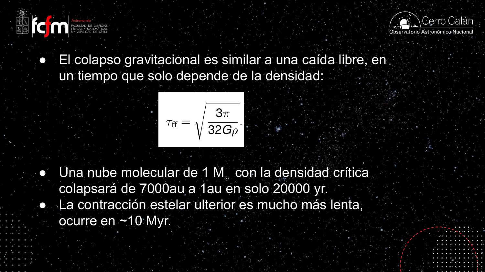
Para la densidad promedio del Sol (~1 tonelada/m³, parecida a la del agua: masa solar dividida por su volumen; el centro es mucho más denso) el tiempo de caída libre da del orden de media hora — el Sol obviamente no está en caída libre, está sostenido por su presión; el punto es que τff es cortísimo a densidades estelares. [Nota de estos apuntes: en la transcripción el profesor duda del número («un milisegundo… una cosa de segundos o menos, no me acuerdo el número exacto»); evaluando la fórmula con ρ ≈ 1.4×10³ kg m⁻³ se obtiene τff ≈ 30 minutos. El orden de magnitud del argumento —«se cae muy rápido»— se mantiene.]
Reloj 2: la contracción de Kelvin-Helmholtz
La protoestrella opaca solo pierde energía por su superficie, radiando aproximadamente como cuerpo negro:
El teorema del virial y el encendido de la fusión
Para una pelota autogravitante en equilibrio, el teorema del virial dice que la energía termal es la mitad de la gravitacional (en magnitud): 2EK ≈ |EG|. Con EK ~ NkT y N ~ M/mp (gas ya ionizado):
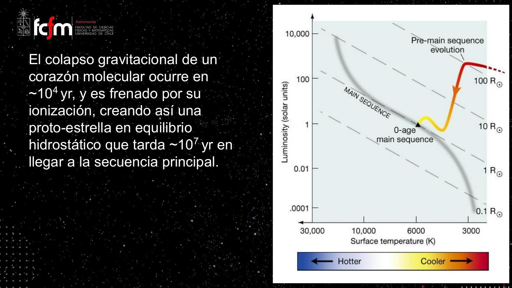
Dos constantes de tiempo separadas por tres órdenes de magnitud (10⁴ vs 10⁷ años) definen un sistema stiff: una dinámica rápida (caída libre) que se satura y entrega el control a una dinámica lenta (drenaje radiativo). Es la misma razón por la que un integrador numérico de este problema necesitaría paso adaptativo — y por la que en el diagrama H-R casi todas las estrellas que vemos están en fases lentas: el tiempo de permanencia en cada estado determina la probabilidad de observarlo, igual que en un profiler estadístico.
Simulaciones: el colapso en el computador
Donde no llega el lápiz, llegan las leyes de Newton programadas.
No hay teoría analítica del colapso de una fractal aleatoria, pero sí «súper buenos computadores» y leyes físicas simples: para esto basta F = ma aplicada a un fluido (hidrodinámica) — nada de relatividad general ni física de partículas. La clase mostró las simulaciones de Matthew Bate (físico computacional inglés, pionero en estos cálculos; hay muchos ejemplos en su página web).
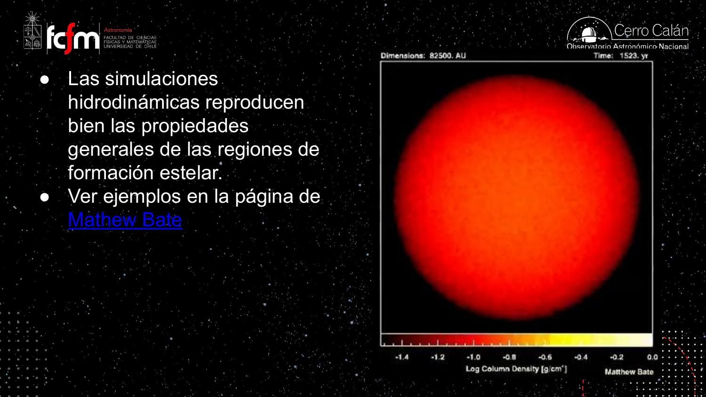
Lo que muestra la película, según la clase:
- La esfera homogénea se fragmenta de inmediato: «como que no duró nada» — confirmando el argumento de la sección 2.
- Los grumos se contraen hasta el punto en que un píxel supera la densidad crítica para condensar una masa solar (~0.1 pc): la simulación lo declara una estrella (una simplificación: no resuelve lo que pasa dentro).
- Las estrellas se forman en grupos, tienen encuentros entre sí, algunas salen disparadas del cúmulo (¡y eso se observa en regiones de formación estelar reales!), y en torno a algunas se forman estructuras como anillos circumbinarios de material.
«El computador resuelve un fenómeno del que no tenemos conocimiento analítico; en ese sentido no lo comprendemos, pero lo podemos reproducir en una máquina.» Física computacional pura: el criterio «densidad de píxel > umbral ⇒ estrella» es un sink particle, el equivalente a colapsar una sub-simulación irresoluble en un objeto puntual con las propiedades agregadas correctas — cambiar resolución por tratabilidad, como en cualquier modelo multiescala.
Momento angular: la barrera centrífuga y el nacimiento del disco
Por qué la masa no puede caer directo sobre la estrella.
En el colapso hay conservación de momento angular. Toda nube real tiene alguna rotación neta: promediando las velocidades caóticas de la fractal queda una rotación promedio, chiquitita pero no nula, con su eje. El momento angular (por unidad de masa, en magnitud) es:
La consecuencia geométrica es el corazón de todo el módulo:
- A lo largo del eje de rotación, nada impide caer: la gravedad actúa sin oposición.
- En el plano ecuatorial, la fuerza centrífuga (creciente, porque v ∝ 1/r) se opone a la contracción: caer hacia adentro exigiría perder momento angular, y no hay cómo — igual que la Tierra no se cae sobre el Sol porque conserva el suyo.
- La nube se achata: colapsa fácil por los polos y queda frenada en el ecuador. Se forma un platillo: el disco de acreción circunestelar.
Y aquí aparece el problema teórico: si el grueso de la masa queda orbitando en el disco, atrapado por la barrera centrífuga, ¿cómo se alimenta la estrella? Para que el material caiga debe perder momento angular. Dos mecanismos aparecen en la clase: la fricción viscosa entre anillos del disco (los anillos se rozan unos con otros, el material migra hacia adentro y el roce genera luminosidad: un «disco activo») y los vientos y jets que se llevan momento angular del sistema (secciones 9 y 10).
El gas del disco, orbitando la masa central, sigue el perfil kepleriano: v(r) = √(GM/r). Cada anillo a su propia velocidad —los internos más rápido— a diferencia de un cuerpo rígido donde v = Ωr. Este perfil diferencial es justamente lo que permite que haya roce entre anillos vecinos.
Respuesta del profesor: rota desde el inicio — cualquier pedazo de gas tiene una rotación promedio—, pero al contraerse gira cada vez más rápido (conservación de L). Las regiones internas son las primeras en acelerar. Las estrellas y planetas jóvenes rotan muy rápido y luego se frenan por el campo magnético; tanto, que se puede estimar la edad de una estrella por su velocidad de rotación: la girocronología (gyrochronology).
El momento angular es un invariante del sistema: como una ley de conservación en un programa, restringe qué estados son alcanzables sin importar la trayectoria. El colapso no puede «optimizar» hacia la configuración de mínima energía (todo en la estrella) porque violaría el invariante; la solución factible es un disco + mecanismos de transporte que muevan momento angular hacia afuera mientras la masa fluye hacia adentro — una arquitectura de contraflujo, como un buffer que despacha datos en una dirección y créditos de flujo en la otra.
Las cuatro clases de objetos estelares jóvenes
De la envoltura fría al disco de escombros, contado por sus espectros.
La evolución de la protoestrella se clasifica en cuatro etapas o «clases» (0, I, II, III), distinguibles por su distribución espectral de energía (SED: luminosidad νFν en función de la frecuencia):
- Clase 0 — El corazón molecular en colapso: un solo cuerpo negro frío, que emite a baja frecuencia (radio/submilimétrico). Escala ~5000 au. Los chorros ya crean cavidades bipolares.
- Clase I — Aparece la protoestrella caliente (rango infrarrojo/visible) más un disco activo de acreción, que brilla en infrarrojo/radio calentado por su propia viscosidad: el roce entre anillos que regula la alimentación de la estrella. Todavía hay envoltura cayendo y vientos fuertes. Escala ~500 au.
- Clase II — Tras ~0.5–1 millón de años: la protoestrella ya casi tiene su radio final, no queda envoltura ni vientos fuertes. El disco es pasivo: brilla calentado principalmente por la estrella, no por acreción. Es el disco protoplanetario clásico. Escala ~50 au.
- Clase III — Se perdió el gas del platillo: quedan «los puros escombros», rocas y restos — el disco de escombros (debris disk) — junto a los productos de la formación planetaria. Escala ~5 au en el esquema.
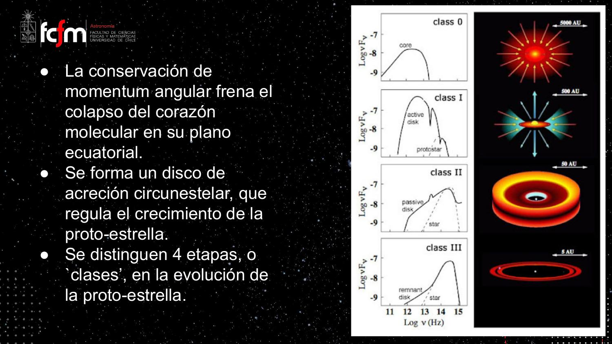
Cada clase, observada
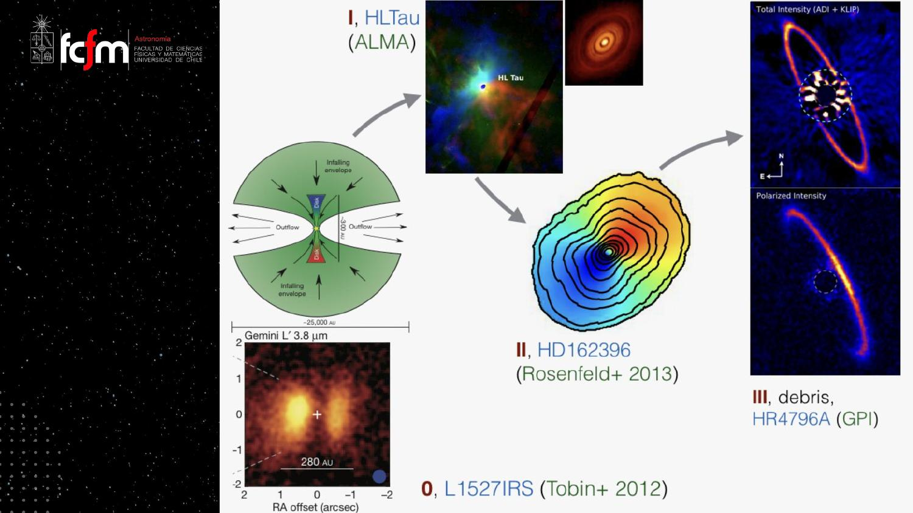
Ver un anillo tenue junto a una estrella brillantísima exige una máscara coronográfica en el plano focal — y aun así la luz estelar residual ensucia la imagen («un montón de cachureo»). El truco: la luz directa de la estrella no está polarizada, pero la que se refleja en el cinturón sí. Observando solo la radiación polarizada, la estrella se cancela y la superficie reflectora aparece limpia hasta muy cerca de la estrella. Ingeniería de señales: separar señal de ruido por una propiedad física que solo tiene la señal.
El profesor estaba en una conferencia cuando salió la imagen de HL Tau (2014): «quedamos impresionadísimos». Anillos —posibles huellas de planetas— en una etapa tan temprana como la clase I implicaban que los planetas pueden empezar a formarse antes de lo que se creía. La clase volverá sobre esta relación anillos–planetas más adelante en el módulo.
Acreción magnetosférica: cómo come la estrella
El campo magnético trunca el disco y canaliza la caída.
Zoom al proceso de acreción (modelo de magnetospheric accretion, Romanova & Owocki 2016, mostrado con cálculos magnetohidrodinámicos: las leyes de Newton para un fluido magnetizado — mucho más difíciles que la hidrodinámica pura). Los ingredientes:
- El disco rota con perfil kepleriano: vdisco(r) = √(GM/r), decreciente con r.
- La estrella y su campo magnético (dipolo, polo norte y sur) rotan aproximadamente como cuerpo rígido con velocidad angular Ω: vB(r) = Ω·r, creciente con r.
- El campo magnético permea el disco, y como el disco tiene un poco de ionización, está bien acoplado a él: las líneas de campo están «congeladas» en la materia (situación nada cotidiana, pero universal en astrofísica).
Las dos curvas de velocidad se cruzan en un radio crítico Rc (radio de corrotación):
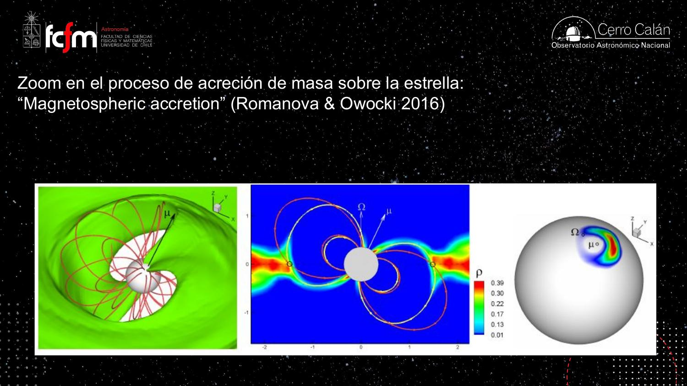
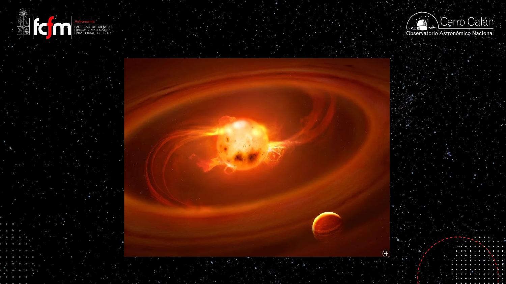
El radio de corrotación funciona como un acoplamiento de embrague: dos volantes girando a distinta velocidad angular conectados por un medio elástico (el campo). Del lado donde el disco va más rápido, el campo extrae momento angular (frena → cae); del lado donde va más lento, se lo inyecta (acelera → eyecta). El mismo dispositivo físico resuelve simultáneamente la alimentación de la estrella y el lanzamiento de vientos.
Vientos, jets y objetos Herbig-Haro
Para poder nacer, la estrella tiene que soplar.
La aceleración magnética fuera del radio de corrotación genera una familia de flujos salientes: el X-wind, el viento cónico (conical wind), el viento del disco (disk wind) y, sobre el eje de la estrella, un jet colimado por otro efecto magnético. En los cálculos MHD se ve la configuración completa: material entrando por el plano del disco (inflow) y una estructura bipolar escapando del sistema.
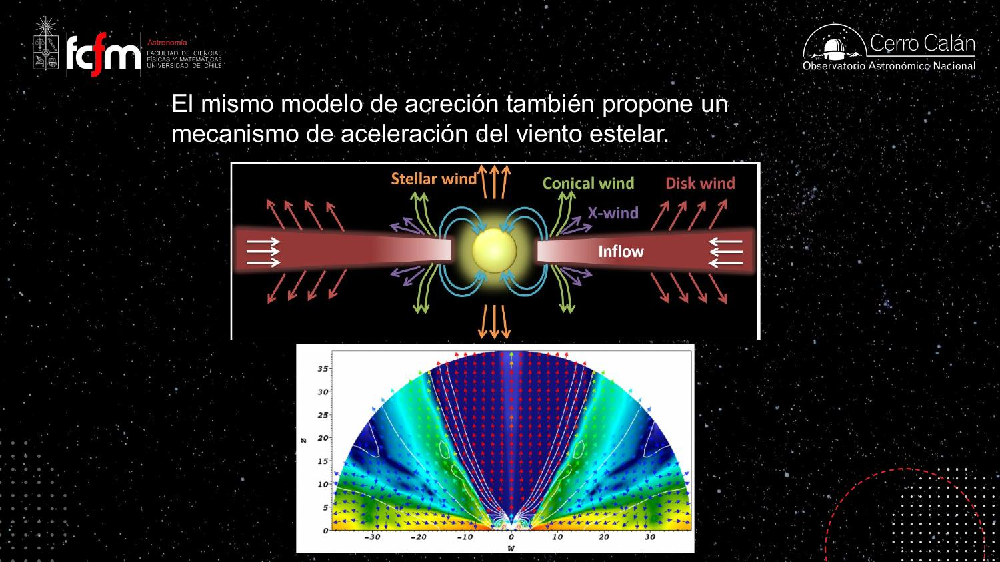
Estos chorros se observan. El ejemplo de la clase: HH 212 en Orión.
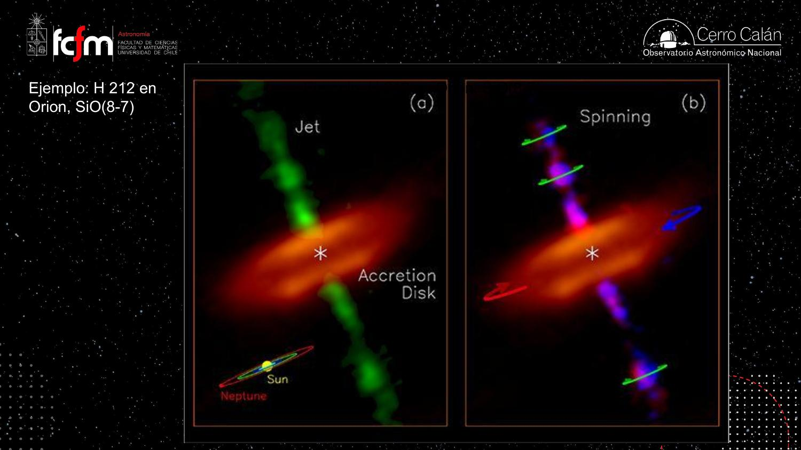
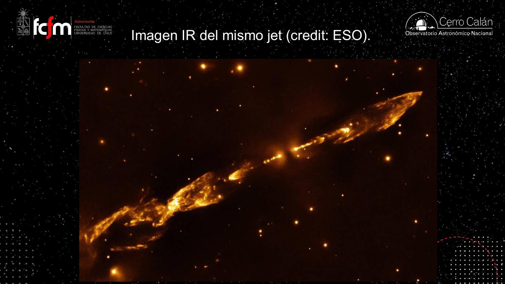
Acreción sobre objetos compactos ⇒ grandes vientos: es un fenómeno común en astrofísica. Los núcleos activos de galaxias —agujeros negros supermasivos acretando— soplan vientos gigantes por el mismo tipo de mecanismo que esta protoestrella. Mismo patrón físico, escalas separadas por muchos órdenes de magnitud.
Ophiuchus: el vivero de discos y el nacimiento de un campo
El contexto que conecta con el resto del módulo.
Volviendo al contexto del módulo: en una nube molecular como la de Ophiuchus (la favorita del profesor), las protoestrellas nacen rodeadas de sus platillos — los discos de acreción que son, desde el punto de vista de la formación planetaria, los discos protoplanetarios donde vamos a observar nacer planetas.

Antes de ALMA, la formación planetaria se imaginaba de forma simple («van chocando arenitas y forman un corazón telúrico») y se dedicaban a ella «dos o tres» investigadores en el mundo, en Japón y Estados Unidos. Las imágenes de discos con estructura mostraron una riqueza de fenómenos mucho mayor — y entender esa estructura es la condición inicial para entender el origen de los planetas, su composición, y en última instancia el origen de la vida.
La clase quedó hasta aquí. Lo que sigue en el módulo: la estructura del disco (equilibrio hidrostático vertical, escala de altura), la rotación sub-kepleriana del gas y las trampas de polvo — el mecanismo que salva a las arenas y rocas de caer en espiral sobre la estrella y permite fabricar planetas (PDF «Módulo III – Clase 2: trampas de polvo»).
Explorar conceptos
Tres widgets para jugar con las ideas de la clase.
Conceptos clave
Tabla de repaso rápido.
| Concepto | Qué es / valor | Por qué importa |
|---|---|---|
| Criterio de Jeans | Colapso si GM²/R > NkT; ρJ ∝ T³/M² | Decide qué (y cuánta) masa puede colapsar en cada etapa |
| Saco de Carbón | 10³ M☉, 20 K, ρ ~ 10⁻²² kg/m³ | Test observacional: cumple el criterio, debería estar colapsando |
| ISM fractal | Estructura autosimilar (LMC en H I 21 cm) | La esfera homogénea no existe; no hay teoría analítica del colapso real |
| Fragmentación jerárquica | Al subir ρ, colapsan masas menores (ρJ ∝ 1/M²) | Una nube de 1000 M☉ forma un cúmulo, no una superestrella |
| Colapso isotermo | Nube molecular transparente: radia toda la energía liberada | T constante ⇒ la caída libre y la fragmentación continúan |
| Freno por ionización | EG se gasta en disociar H₂ e ionizar H; gas → plasma opaco | Detiene la caída libre en R ~ 1 au ≈ 100 R☉: nace la protoestrella |
| Tiempo de caída libre | τff = √(3π/32Gρ); ~2×10⁴ yr para el fragmento | Solo depende de la densidad; el colapso es un suspiro astronómico |
| Etapa de Kelvin-Helmholtz | τKH ≈ GM²/(RL) ~ 10⁷ yr; L = 4πR²σT⁴ | Contracción lenta alimentada por energía gravitacional, hasta la fusión |
| Teorema del virial | 2EK ≈ |EG| ⇒ T ~ GMmp/(kBR) | T central sube al contraerse; a 10⁶–10⁷ K se gatilla la fusión (ZAMS) |
| Momento angular | L = Mvr constante ⇒ v ∝ 1/r (bailarina) | Barrera centrífuga ecuatorial: achata la nube y forma el disco |
| Rotación kepleriana | v(r) = √(GM/r), rotación diferencial | Perfil del disco; el roce entre anillos transporta momento angular |
| Clases 0–III | SEDs: núcleo frío → disco activo → disco pasivo → escombros | Cronología observable de la protoestrella y su disco |
| Acreción magnetosférica | Disco truncado; columnas de caída; hotspots; Rc = (GM/Ω²)1/3 | Explica cómo la estrella come a pesar de la barrera centrífuga |
| Vientos y jets | X-wind, conical wind, disk wind, jet colimado; HH 212 rota | Se llevan momento angular: «para nacer, la estrella tiene que soplar» |
| Objetos Herbig-Haro | Nudos brillantes donde el jet impacta el ISM | Evidencia a gran escala de los chorros protoestelares |
| Girocronología | Edad estelar estimada por velocidad de rotación | Las estrellas jóvenes rotan rápido y se frenan magnéticamente |
Exámenes de práctica
10 exámenes de 5 preguntas (3 de alternativas autocorregibles + 2 de respuesta escrita).
- Examen 01Criterio de Jeans
- Examen 02Fractales y fragmentación
- Examen 03Transparencia e ionización
- Examen 04Escalas de tiempo
- Examen 05Virial y camino a la ZAMS
- Examen 06Simulaciones y momento angular
- Examen 07Clases 0–III
- Examen 08Acreción magnetosférica
- Examen 09Vientos, jets y Herbig-Haro
- Examen 10Integrador